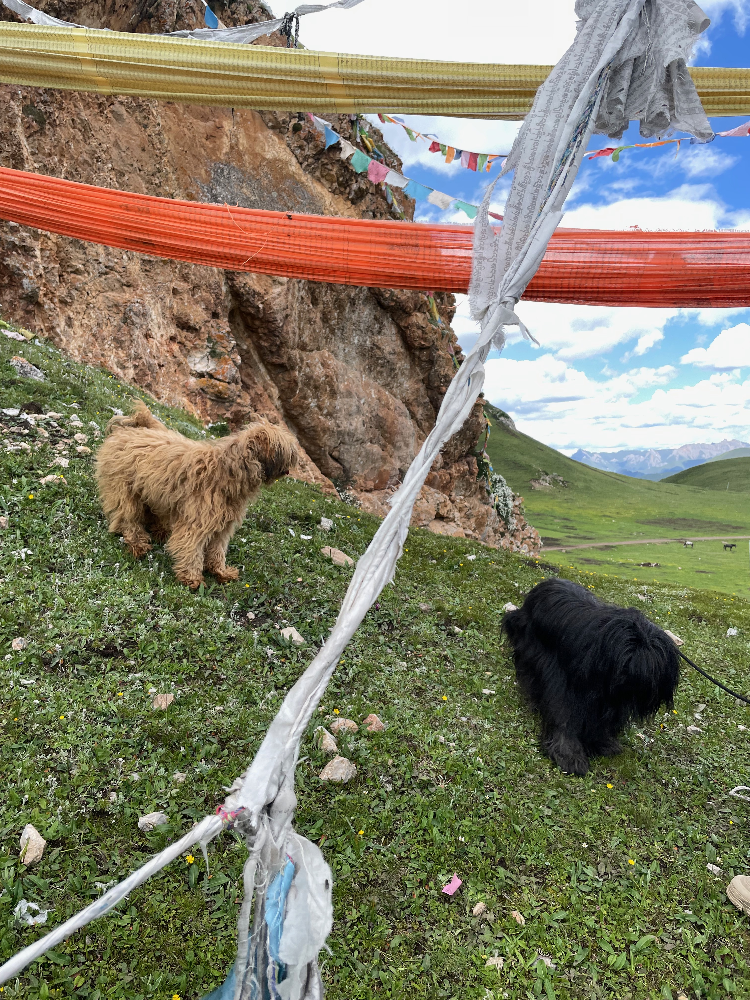

チベタンテリアについて

チベット原産の犬で、チベット寺院や地域社会で伴侶犬、そして見張りをする番犬として大切にされてきました。
「Tibetan Terrier（テリア）」という名前はスクエアな外見から付けられたもので、分類上はテリアではなくコンパニオンとされています。
（FCI標準にもその旨が明記されています）
古い犬種と言われており､伝承では「約2000年の歴史」とされています。
西洋への紹介は概ね20世紀初頭以降､イギリス人医師のアグネス.R.H.グレイグ博士がインドに滞在中､病気の治療のお礼にと贈られたBunti と言う名のチベタンテリアをイギリスに持ち帰り､最初の犬舎lamlehを設立､その後国際的に認知される犬種となりました。
FCIスタンダード No.209
原産地：チベット
用途：コンパニオン・ドッグ
一般外貌
健全な中型犬種で、長毛。
全体的な外貌はスクエアで、毅然とした表情をしています。
習性・性格
生き生きとして気立てがよく、忠実なコンパニオン・ドッグです。
愛嬌があり、外向的で敏活、理解力があり勇ましい性質を持ちます。
獰猛でも喧嘩好きでもなく、見知らぬ人に対する愛情は控えめです。
毛色
ホワイト、ゴールデン、クリーム、グレー、スモーク、ブラック、パーティ・カラー、トライカラーなどがあり、チョコレートまたはレバー色以外はすべて許容されています。
サイズ
牡：35.6～40.6cm
牝：牡より僅かに小さい